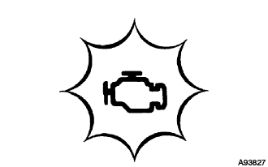

ECD SYSTEM > DIAGNOSIS SYSTEM |
| EURO-OBD |
| M-OBD (EXCEPT EUROPEAN SPEC.) |
| NORMAL MODE AND CHECK MODE |
| 2 TRIP DETECTION LOGIC |
| FREEZE FRAME DATA |
| BATTERY VOLTAGE |
| MIL |
 |
The MIL illuminates when the engine switch is turned on (IG) and the engine is not running.
When the engine is started, the MIL should turn off. If the MIL remains on, the diagnosis system has detected a malfunction or abnormality in the ECD system.
| ALL READINESS |
Connect the intelligent tester to the DLC3.
Turn the engine switch on (IG).
Turn the tester on.
Clear the DTCs (Click here).
Perform the DTC judgment driving pattern to run the DTC judgment.
Enter the following menus: Powertrain / Engine / Utility / All Readiness.
Input the DTCs to be confirmed.
Check the DTC judgment result.
| Tester Display | Description |
| NORMAL |
|
| ABNORMAL |
|
| INCOMPLETE |
|
| UNKNOWN |
|